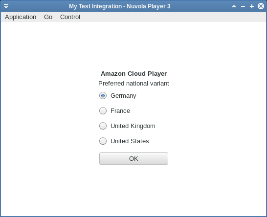
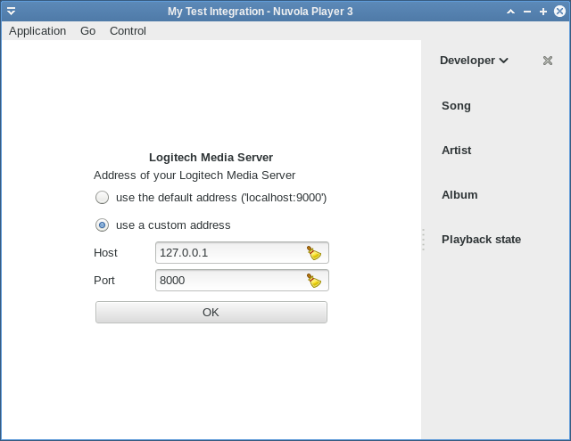

This article covers Web apps that don't have a single (constant) home page URL
(e.g. http://rdio.com), their home page has to be specified by user:
In such cases, the constant home_url field of metadata.json doesn't provide enough
flexibility, we need more magic:
home_url field of
metadata.json.Global window object not available
Nuvola.Core::InitAppRunner, Nuvola.Core::InitializationForm and Nuvola.Core::PreferencesForm signals mentioned in this article are executed in a pure JavaScript environment without Window object. Use Nuvola.log() to print logging and debugging messages to terminal instead of console.log().
Amazon Cloud Player has multiple national variants, each with a different address, so we cannot
just use home_url field in metadata.json and we have to offer user a way how to specify
the preferred national variant.

We use only one configuration key,
COUNTRY_VARIANT, to hold which national variant is preferred. Other defined variables
(constants by convention) will be used later. Note that
translation function alias C_ is used mark short translatable
strings with context information.
...
// Translations
var _ = Nuvola.Translate.gettext
var C_ = Nuvola.Translate.pgettext
...
var COUNTRY_VARIANT = 'app.country_variant'
var HOME_PAGE = 'http://www.amazon.{1}/gp/dmusic/mp3/player'
var COUNTRY_VARIANTS = [
['de', C_('Amazon variant', 'Germany')],
['fr', C_('Amazon variant', 'France')],
['co.uk', C_('Amazon variant', 'United Kingdom')],
['com', C_('Amazon variant', 'United States')]
]
...
var WebApp = Nuvola.$WebApp()
WebApp._onInitAppRunner = function (emitter) {
Nuvola.WebApp._onInitAppRunner.call(this, emitter)
Nuvola.config.setDefault(COUNTRY_VARIANT, '')
}
...The initialization form contains one radio
entry for each value of COUNTRY_VARIANT key. The empty string as a default value ensures the
first radio entry is selected by default. Note that
translation function alias _ is used mark translatable strings.
...
// Translations
var _ = Nuvola.Translate.gettext
var C_ = Nuvola.Translate.pgettext
...
WebApp._onInitAppRunner = function (emitter) {
...
Nuvola.core.connect('InitializationForm', this)
}
WebApp._onInitializationForm = function (emitter, values, entries) {
if (!Nuvola.config.hasKey(COUNTRY_VARIANT)) {
this.appendPreferences(values, entries)
}
}
WebApp.appendPreferences = function (values, entries) {
values[COUNTRY_VARIANT] = Nuvola.config.get(COUNTRY_VARIANT)
entries.push(['header', _('Amazon Cloud Player')])
entries.push(['label', _('Preferred national variant')])
for (var i = 0; i < COUNTRY_VARIANTS.length; i++) {
entries.push(['option', COUNTRY_VARIANT, COUNTRY_VARIANTS[i][0], COUNTRY_VARIANTS[i][1]])
}
}Since we don't need any extra configuration, the
preferences form is same as the initialization
form, so we reuse WebApp.appendPreferences() method.
...
WebApp._onInitAppRunner = function (emitter) {
...
Nuvola.core.connect('InitializationForm', this)
Nuvola.core.connect('PreferencesForm', this)
}
WebApp._onPreferencesForm = function (emitter, values, entries) {
this.appendPreferences(values, entries)
}
...Since we don't use the home_url field of metadata.json, we have to override the default
handler for Nuvola.Core::HomePageRequest signal.
...
WebApp._onHomePageRequest = function (emitter, result) {
result.url = Nuvola.format(HOME_PAGE, Nuvola.config.get(COUNTRY_VARIANT))
}
...The default address of Logitech Media Server
instance is http://localhost:9000/. However, user can choose a different address, so we cannot
just use "home_url": "http://localhost:9000/" in metadata.json and we have to offer user a way
how to specify address of his instance.

We use three configuration keys:
ADDRESS - whether user wants to use default (ADDRESS_DEFAULT) or custom
(ADDRESS_CUSTOM) addressHOST - server hostnamePORT - server port...
var DEFAULT_ADDRESS = 'http://localhost:9000/'
var ADDRESS = 'app.address'
var ADDRESS_DEFAULT = 'default'
var ADDRESS_CUSTOM = 'custom'
var HOST = 'app.host'
var PORT = 'app.port'
...
var WebApp = Nuvola.$WebApp()
WebApp._onInitAppRunner = function (emitter) {
Nuvola.WebApp._onInitAppRunner.call(this, emitter)
Nuvola.config.setDefault(ADDRESS, ADDRESS_DEFAULT)
Nuvola.config.setDefault(HOST, '')
Nuvola.config.setDefault(PORT, '')
}
...The initialization form contains two radio
entries (one for each value of ADDRESS key) and two text entries for HOST and PORT keys.
Note that the text entries are disabled (insensitive) when ADDRESS entry is set to
ADDRESS_DEFAULT. Try it out ;-) Note that
translation function alias _ is used mark translatable strings.
...
// Translations
var _ = Nuvola.Translate.gettext
...
WebApp._onInitAppRunner = function (emitter) {
...
Nuvola.core.connect('InitializationForm', this)
}
WebApp._onInitializationForm = function (emitter, values, entries) {
if (!Nuvola.config.hasKey(ADDRESS)) {
this.appendPreferences(values, entries)
}
}
WebApp.appendPreferences = function (values, entries) {
values[ADDRESS] = Nuvola.config.get(ADDRESS)
values[HOST] = Nuvola.config.get(HOST)
values[PORT] = Nuvola.config.get(PORT)
entries.push(['header', _('Logitech Media Server')])
entries.push(['label', _('Address of your Logitech Media Server')])
entries.push(['option', ADDRESS, ADDRESS_DEFAULT,
_('use default address ('localhost:9000')'), null, [HOST, PORT]])
entries.push(['option', ADDRESS, ADDRESS_CUSTOM,
_('use custom address'), [HOST, PORT], null])
entries.push(['string', HOST, 'Host'])
entries.push(['string', PORT, 'Port'])
}Since we don't need any extra configuration, the
preferences form is same as the initialization
form, so we reuse WebApp.appendPreferences() method.
...
WebApp._onInitAppRunner = function (emitter) {
...
Nuvola.core.connect('InitializationForm', this)
Nuvola.core.connect('PreferencesForm', this)
}
WebApp._onPreferencesForm = function (emitter, values, entries) {
this.appendPreferences(values, entries)
}
...Since we don't use the home_url field of metadata.json, we have to override the default
handler for Nuvola.Core::HomePageRequest signal.
...
WebApp._onHomePageRequest = function (emitter, result) {
result.url = (Nuvola.config.get(ADDRESS) === ADDRESS_CUSTOM)
? Nuvola.format('http://{1}:{2}', Nuvola.config.get(HOST), Nuvola.config.get(PORT))
: DEFAULT_ADDRESS
}
...